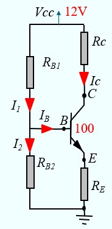
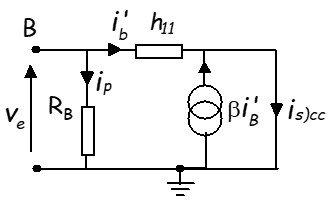

Code de couleurs des résistances
La masse
Théorème de Millman
Théorème de Thévenin
Schéma équivalent d'un amplificateur
La diode
Introduction
Exemples
Redressement Mono-alternance
Redressement Double-alternance V1
Redressement Double-alternance V2
Filtrage par condensateur en tête
Le transistor bipolaire

Electronique de base
Code de couleurs des résistances
Les résistances vendues dans le commerce sont marquées avec un code de couleur qui permet de reconnaître leurs valeurs. Les systèmes les plus utilisés sont le système à 4 anneaux et le système à 5 annaux.

Code à 4 anneaux

La lecture se fait de gauche à droite à partir de l'extrémité ou sont groupés les anneaux. Les deux premiers anneaux indiquent la valeur des chiffres significatifs. Le troisième anneau indique le nombre de zéros. Le quatrième anneau indique la tolérance : Or = 5%, Argent = 10 %
Ainsi, la résistance de la figure (V B R Or) a une valeur de : 56 00 Ω ± 5%
Code à 5 anneaux

La lecture se fait de gauche à droite à partir de l'extrémité ou sont groupés les anneaux. Les trois premiers anneaux indiquent la valeur des chiffres significatifs. Le quatrième anneau indique le nombre de zéros. Le cinquième anneau indique la tolérance : Rouge = 2%, Or = 5%, Argent = 10 %
Ainsi, la résistance de la figure (J Vi Ve R Or) a une valeur de : 47500 Ω ± 5%
Valeur normalisées des résistances et condensateurs
Quand on désire acheter une résistance ou un condensateur, on trouve dans le commerce des valeurs biens définies. Les valeurs normalisées sont des séries de valeurs définies par des normes internationales pour assurer que les composants utilisés en électronique sont facilement disponibles et suffisamment précis pour la plupart des applications. Ces valeurs sont regroupées dans des séries appelées séries de préférences E, qui sont normalisées selon les normes de la CEI (Commission électrotechnique internationale).
Les séries les plus courantes pour les résistances et les condensateurs :
- Série E6 : 10, 15, 22, 33, 47, 68
- Série E12 : 100, 120, 150, 180, 220, 270, 330, 390, 470, 560, 680, 820
- Série E24 : 100, 110, 120, 130, 150, 160, 180, 200, 220, 240, 270, 300, 330, 360, 390, 430, 470, 510, 560, 620, 680, 750, 820, 910
Par exemple, dans la série E6, on trouvera les valeurs :
1Ω, 1.5Ω, 2.2Ω, 3.3Ω, 4.7Ω, 6.8Ω,
10Ω, 15Ω, 22Ω, 33Ω, 47Ω, 68Ω,
100Ω, 150Ω, 220Ω, 330Ω, 470Ω, 680Ω,
1kΩ, 1.5kΩ, 2.2kΩ, 3.3kΩ, 4.7kΩ, 6.8kΩ,
10kΩ, 15kΩ, 22kΩ, 33kΩ, 47kΩ, 68kΩ,
100kΩ, 150kΩ, 220kΩ, 330kΩ, 470kΩ, 680kΩ,
1MΩ, 1.5MΩ, 2.2MΩ, 3.3MΩ, 4.7MΩ, 6.8MΩ,
10MΩ, 15MΩ, 22MΩ, 33MΩ, 47MΩ, 68MΩ,
100MΩ, 150MΩ, 220MΩ, 330MΩ, 470MΩ, 680MΩ,
La masse
Quand on parle de tension, il s'agit d'une différence de potentiel entre deux points d'un circuit.
Ainsi, dans la figure ci-dessous, on a :
VAB = VA - VB
VBC = VB - VC
En électronique, on a l'habitude de considérer un point du circuit comme référence de tension (tension zéro) qu'on appelle la masse. Les tensions aux différents points du circuit seront calculées par rapport à ce point. En général, on prend pour masse la borne négative de l'alimentation. Ainsi sur la figure, c'est le point M qui constitue la masse, on a donc VM = 0
Quand on parle de la tension en un point, c'est par rapport à la masse :
- VA est la tension au point A par rapport à la masse (VA - VM)
- VB est la tension au point B par rapport à la masse (VB - VM)
Théorèmes de Millman

Que l'on peut représenter d'une manière plus simple par:

Théorèmes de Thévenin
 La valeur de Veq est déterminée à partir du montage original comme suit:
La valeur de Veq est déterminée à partir du montage original comme suit:
- On déconnecte le reste du montage
- On calcule la tension au point A à l'aide du théorème de Millman
La valeur de Req est déterminée à partir du montage original comme suit:
- On déconnecte le reste du montage
- On annule toutes les sources
- On calcule la résistance entre le point A et la masse

Exemple
Dans le montage suivant, on va remplacer l'étage d'entrée par son équivalent Thévenin pour faciliter le calcul de IB

Ce qui donne un montage équivalent plus simple

Ce qui permet de calculer IB en écrivant la loi d'Ohm dans la maille d'entrée
Veq = Req IB + 0.7 + RE( IB + βIB )
Schéma équivalent d'un amplificateur
Un amplificateur de tension est un dispositif électronique dont la fonction principale est d'augmenter l'amplitude du signal appliqué à son entrée. Il prend sur son entrée un faible signal de tension et le reproduit en sortie avec une plus grande amplitude, sans modifier la forme du signal (du moins dans un cas idéal). Le facteur de multiplication entre la tension d'entrée et la tension de sortie est appelé gain en tension \(A_v = {V_s \over V_e} \).
Le gain en tension Av seul ne permet pas de caractériser correctement l'amplificateur à cause de l'interaction entre celui-ci avec le générateur du signal et la charge
Dès que l'on branche une source de signal à l'entrée (générateur) et une charge à la sortie, on s'aperçoit que le rapport entre Vs et Ve devient différent de Av : \( {V_s \over V_e} \ne A_v\)
Le gain en tension Av est en fait le gain à vide de l'amplificateur
Pour expliquer ce qui se passe, il faut introduire deux autres paramètres de l'amplificateur qui sont l'impédance d'entrée Ze et l'impédance de sortie Zs
L'impédance d'entrée (Ze) détermine comment l'amplificateur interagit avec la source de signal. Une impédance d'entrée élevée permet de minimiser la charge sur la source de signal, assurant ainsi que le signal appliqué à l'entrée est efficacement transmis sans être atténué
L'impédance de sortie (Zs) définit la manière dont l'amplificateur délivre le signal à la charge connectée à sa sortie. Pour maximiser le transfert de puissance, une impédance de sortie faible est souvent recherchée
Pour illustrer l'interaction de l'amplificateur avec la source et la charge il sera représenté par le model suivant :
- Vu de l'entrée, l'amplificateur se présente comme une impédance de valeur Ze
- Vu de la sortie, l'amplificateur se comporte comme un générateur ayant une tension interne Vi = Av Ve et une impédance de sortie Zs. A vide (aucune charge à la sortie) la tension interne Vi se retrouve à la sortie (Vs = Vi) car il n'y a aucune chute de tension dans Zs
Quand on branche la source à l'entrée de l'ampli et la charge à sa sortie, on obtient cette configuration :

- Adaptation à l'entrée
L'impédance d'entrée Ze de l'ampli forme un diviseur de potentiel avec l'impédance de sortie Zg du générateur. Avant de brancher le générateur, on pouvait mesurer une tension égale à Vg à la sortie du générateur, c'est sa tension de sortie à vide. Après avoir branché le générateur à l'ampli, la tension de sortie du générateur qui est aussi la tension d'entrée de l'ampli devient : $$Ve = {Ze \over Ze + Zg} Vg$$
Nous appellerons ce rapport : facteur d'adaptation à l'entrée Fae - Adaptation à la sortie
La charge RL forme un diviseur de tension avec l'impédance de sortie Zs. La tension de sortie obtenue aux bornes de la charges est donnée par: $$Vs = {R_L \over R_L + Zs} Vi = {R_L \over R_L + Zs} Av Ve$$ Nous appellerons ce rapport facteur d'adaptation à la sortie Fas
Finalement on obtient l'expression qui donne le vrai gain du montage :
$$Vs = {Ze \over Ze + Zg} Av {R_L \over R_L + Zs} Vg$$Les facteurs d'adaptation Fae et Fas sont inférieurs à 1 est 'cassent' le gain Av.
On peut minimiser les pertes d'adaptation si l'amplificateur et la source répondent aux critères suivants :
- Un bon amplificateur doit avoir une impédance d'entrée Ze aussi grande que possible et une impédance de sortie Zs aussi faible que possible
- Un bon générateur (source) doit avoir une impédance de sortie Zg aussi faible que possible
Dans ces conditions, on aura très peu de perte d'adaptation :
- Zg sera négligeable devant Ze ⇒ Fae ≈ 1
- Zs sera négligeable devant RL ⇒ Fas ≈ 1
Et on obtient :
$$Vs \approx Av \; Vg$$
La diode
- La diode a un composant qui conduit dans un seul sens,
- Elle est réalisée à l'aide d'une jonction PN obtenue en collant un SC (N) à un SC (P) d'où l'appellation diode à Jonction
- Comme on le constate sur la caractéristique tension-courant, Elle a un seuil de conduction. Elle commence à conduire doucement quand VD est de l'ordre de 0.3V . Elle est franchement conductrice quand VD est de l'ordre de 0.7V
- Pour faciliter, on adopte une caractéristique idéalisée

- Vd < 0.7 V ⇒ diode Bloquée (interrupteur ouvert), Id = 0
- Vd = 0.7 V ⇒ diode conductrice, Le courant doit être limité par une résistance


Règle simple :
- Il faut toujours avoir une résistance dans le circuit de la diode pour fixer la valeur du courant quand la diode est passante,
- La résistance peut être d'un coté ou de l'autre. On peut même avoir deux résistances, une de chaque coté,
- Pour savoir si la diode est passante, on compare les tensions de chaque coté du circuit, résistance incluse,
- Si la tension coté Anode est supérieure (d'au moins 0.7V) à la tension coté cathode, alors la diode est passante. La diode pred 0.7V, les reste se retrouve aux bornes de la résistance ce qui permet de déterminer la valeur du courant.

Exemple 1
Calculer la valeur de R pour que le courant I dans le circuit soit égal à 10 mA
Solution :
Vcc = 5V, ⇒ Diode passante, Vd = 0.7V
Vcc = RI + 0.7
R = (Vcc - 0.7)/I
R = (5 - 0.7) / (10 * 10-3) Ω
R = 430 Ω
Exemple 2 :

Calculer la valeur de R pour que la puissance Pd dissipée dans la diode soit égale à 100 mW
Solution :
Vcc = 5V, ⇒ Diode passante, Vd = 0.7V
Pd = 0.7V * Id = 100 mW ⇒ Id = 100 mW / 0.7V
R = (Vcc - 0.7)/Id = (10 - 0.7) * 0.7V / 100mW
R = 65 Ω
Exemple 3 :

Donner l'état de la diode et la valeur du courant Id dans les deux cas suivants:
a) R1 = 1K
b) R1 = 10K
Solution :
On simplifie le montage à l'aide du théorème de Thévenin
Veq = (V1 * R2 + V2 * R1) / (R1 + R2)
Req = (R1 * R2)/ (R1 + R2)
a) R1 = 1K
Veq = 5V, Req = 667 Ω
Veq > 0.7V ⇒ Diode passante, Vd = 0.7V
Id = (5V - 0.7V) / 0.667K = 6.45 mA
b) R1 = 10K
Veq = -2.5V, Req = 1667 Ω
Veq < 0.7V ⇒ Diode bloquée
Id = 0
Exemple 4 :

Solution :
Pour analyser le montage, on se base sur la règle citée plus haut
a) A=0V, B=0V
-
D1 passante , Vd1 = 0,7V = (Vs - VA)
D2 passante , Vd2 = 0.7V = (Vs - VB)
⇒ Vs = 0.7V
b) A=0V, B=5V
-
D1 passante , Vd1 = 0,7V ⇒ Vs = 0.7V
D2 bloquée car Vd2 = (Vs - VB) = 0.7 - 5 = -4.3V
⇒ Vs = 0.7V
c) A=5V, B=0V
-
D2 passante , Vd2 = 0,7V ⇒ Vs = 0.7V
D1 bloquée car Vd1 = (Vs - VA) = 0.7 - 5 = -4.3V
⇒ Vs = 0.7V
d) A=5V, B=5V
-
D1 bloquée ≡ circuit ouvert
D2 bloquée ≡circuit ouvert
⇒ Courant nul dans la résistance
⇒ Vs = Vcc = 5V (Vcc - Vs = RI = 0)
Ce tableau est un tableau électrique. On va essayer de le transformer en table de vérité logique
Si on considère que :
- Une tension faible [0V…1V] ⇒ niveau logique 0
- Une tension forte [4V…5V] ⇒ niveau logique 1
le tableau devient :

C'est la table de vérité d'une porte ET. Nous avons réalisé notre premier circuit logique, premier pas dans le monde numérique

Exemple 5 :

Solution :
Pour analyser le montage, on se base sur la règle citée plus haut
a) A=0V, B=0V
-
D1 bloquée ≡ circuit ouvert
D2 bloquée ≡ circuit ouvert
⇒ Courant nul dans la résistance
⇒ Vs = 0
b) A=0V, B=5V
-
D1 bloquée ≡ circuit ouvert
D2 passante, Vd2 = 0,7V = VB - Vs ⇒ Vs = 5 - 0.7V = 4.3V
b) A=5V, B=0V
-
D1 passante, Vd1 = 0,7V = VA - Vs ⇒ Vs = 5 - 0.7V = 4.3V
D2 bloquée ≡ circuit ouvert
b) A=5V, B=5V
-
D1 passante, Vd1 = 0,7V = VA - Vs
D2 passante, Vd2 = 0,7V = VB - Vs
⇒ Vs = 5 - 0.7V = 4.3V
Ce tableau est un tableau électrique. On va essayer de le transformer en table de vérité logique
Si on considère que :
- Une tension faible [0V…1V] ⇒ niveau logique 0
- Une tension forte [4V…5V] ⇒ niveau logique 1
le tableau devient :

C'est la table de vérité d'une porte OU
Redressement Mono-alternance :
Le redressement des signaux alternatifs est une fonction importante en électronique. L'usage le plus courant consiste à convertir le courant alternatif (CA) en courant continu (CC). Cette conversion est essentielle dans de nombreux appareils électroniques qui nécessitent une alimentation en courant continu.


Pendant l'alternance positive, dès que Ve devient > 0.7V, la diode devient passante, (Vd = 0.7V). La tension de sortie Vs suit Ve à 0.7V près, sa valeur crête est égale à E' = E - 0.7
Pendant l'alternance négative, la diode se bloque. Elle est équivalente à un interrupteur ouvert, la tension de sortie est égale à 0.
On constate sur la Figure que la tension de sortie est toujours positive mais elle est encore loin d'être continue.
La composante continue est égale à la valeur moyenne

La tension redressée peut dans certains cas être utilisée pour alimenter un moteur à courant continu. Le moteur tournera comme s'il était alimenté par une tension continue égale à la valeur moyenne
Tension inverse maximale
A l'instant 3π/2, la tension inverse aux bornes de la diode atteint sa valeur maximale :
Vd = Ve - Vs = -E - 0 = -E
Cette tension ne doit pas dépasser la valeur précisée dans la datasheet
Voici un exemple de datasheet:
Redressement Double-alternance, transfo à point milieu :

Si on prend le point milieu du transformateur comme référence, les tensions de sortie du transformateur V1 et V2 sont en opposition de phase.

Pendant l'alternance positive de V1, (négative de V2), la diode D1 conduit et alimente la charge. D2 est bloquée
Vs = V1 - 0.7
Pendant l'alternance positive de V2, (négative de V1), la diode D2 conduit et alimente la charge. D1 est bloquée
Vs = V2 - 0.7

La charge est ainsi alimentée pendant les deux alternances. La tension Vs est représentée sur la Figure ci-dessous. Sa valeur max est E'= E -0.7
La composante continue est égale à la valeur moyenne

Tension inverse maximale
Pendant la première alternance, la diode D2 est bloquée. A l'instant π/2, elle subit sa tension inverse la plus importante
- La tension sur son Anode est : VA = V2(π/2) = -E
- La tension sur sa cathode est: VK = Vs(π/2) = E'
- La tension inverse est : VRM = VK - VA = E' - (-E) = E - 0.7 + E = 2E - 0.7
Redressement Double-alternance, montage à pont :
Ici on utilise un transformateur simple et un pont redresseur à 4 diodes
A 'entrée du pont, on a un signal sinusoidal simple

Pendant l'alternance positive de Ve, les diodes D1 et D2 sont passantes et alimentent la charge. Les diodes D3 et D4 sont bloquées
Vs = Ve - 2x0.7
Pendant l'alternance négative de Ve, les diodes D3 et D4 sont passantes et alimentent la charge dans le même sens que précédemment. Les diodes D1 et D2 sont bloquées
Vs = Ve - 2x0.7

La charge est ainsi alimentée pendant les deux alternances. La tension Vs est représentée sur la Figure ci-dessous. Sa valeur max est E'= E -2x0.7
La composante continue est égale à la valeur moyenne
Tension inverse maximale
Pendant la première alternance, la diode D3 est bloquée. A l'instant π/2, elle subit sa tension inverse la plus importante
- La tension sur sa cathode est: VK = Ve(π/2) - Vd1 = E - 0.7
- La tension sur son Anode est : VA = 0 (référence)
- La tension inverse est : VRM = VK - VA = E - 0.7 - 0 = E - 0.7
Filtrage par condensateur en tête

Le filtrage est réalisé à l'aide d'un condensateur de forte valeur placé en parallèle avec la charge RL
Pendant la demi-période positive, dès que Ve>0.7V, la diode conduit. Le condensateur commence à se charger jusqu'à ce que Ve atteigne sa valeur de crête E, Vs est alors égale à E'=E-0.7 (point b). A cause de la résistance quasi nulle de la diode, la charge du condensateur suit parfaitement la tension d'entrée Ve, elles sont juste décalées de 0.7V. Dès que Ve commence à diminuer, Vs ne peut pas la suivre car le condensateur est chargé, la diode se bloque, Le condensateur se décharger alors dans la charge RL avec la constante de temps τ = RL C. Quand on arrive au point a, Ve devient supérieure à Vs, la diode conduit, et le condensateur se charge de nouveau jusqu'à E'=E-07. On est arrivé au point b, le cycle recommence
La diode ne conduit que pendant les intervalles [a, b], le reste du temp, c'est le condensateur qui alimente la charge
Si la valeur de C est importante, la décharge est lente et quasi-horizontale. L'allure de Vs s'approchant d'une tension continue.

Calcul de l'ondulation ΔV
On va commencer par le redressement mono-alternance

Le calcul exact de l'ondulation n'est pas évident. On va faire une approximation.
L'équation de Vs pendant la décharge est : Vs = E' e-t/(RC)
Si on note E1 la valeur de Vs à l'instant to, on aura :
E1= E' e-to/(RC), ΔV = E'- E1
La valeur de E1 est très difficile à calculer car on ne connaît pas la valeur de to, (instant de l'intersection d'une exponentielle et un sinus)
Si la valeur de C est importante, la décharge est quasi horizontale, l'instant to sera très proche de la période T. La valeur de E2 = Vs(T) sera très proche de E1.
E1= E' e-T/(RC)
ΔV = E'- E2 = E' - E'e-T/(RC) = E'( 1-e - T/(RC) )
On va encore simplifier cette expression en utilisant l'approximation e x ≈ 1 + x pour x faible
Pour cela il faut d'abord vérifier que Le terme -T/(RC) est faible devant l'unité
Prenons un exemple réaliste :
On désire réaliser une alim (5V, 100mA) :
E'≈ 5V
R = 5V/0,1A = 50 Ω
Choisissons C = 4700 µF
f = 50 Hz, ⇒ T = 20 ms
T/(RC) = 20 m / (50 . 4700 µ) = 0.08
Cette valeur justifie l'approximation
ΔV = E'( 1 - (1 - T/(RC)) )
ΔV = E'/(RCf)
En général la résistance de charge R n'est pas connue. C'est plutôt le courant Io que l'alimentation doit être capable délivrer à la charge qui est défini
E' = R Io ⇒ R = E'/Io
ΔV = E'/(RCf) = Io/(Cf)
Pour le redressement double-alternance, le calcul est le même sauf qu'il faut remplacer T par T/2
ΔV = E'/(2RCf) = Io / (2Cf)
Le transistor bipolaire
Le transistor est constitué de 3 couches de semi-conducteurs. On distingue les transistor NPN et les transistor PNP
- La base traversée par le courant IB, est utilisée comme entrée de commande,
- Le collecteur, traversé par le courant IC, est le utilisé comme borne de sortie,
- L'émetteur traversé par le courant IE, est le plus souvent utilisé comme référence
Le transistor bipolaire a de multiples usages parmi lesquels on peut citer :
- Amplificateur: pour amplifier des signaux de faible amplitude
- Oscillateur: pour générer des signaux sinusoïdaux
- Commutateur: pour réaliser des circuits logiques ou commander une charge comme un moteur ou une lampe…
Model simplifié
La physique du transistor est complexe. dans ce tuto on va se contenter d'utiliser un modèle très simplifié suffisant pour analyser et concevoir de nombreux montages
Le transistor est un ampli de courant
IC = β IB
- IE = IC + IB
- La jonction base-émetteur (diode) détermine l'état du transistor. Quand elle conduit , le transistor conduit, et on a VBE= 0.7V et un courant IB ≠ 0
- La tension VCE est imposée par le circuit extérieur
- La jonction base-collecteur fonctionne en inverse à cause de l'effet transistor, "il vaut mieux l'oublier"
Polarisation du transistor
La polarisation d'un transistor bipolaire consiste à appliquer des tensions continues spécifiques à ses trois bornes (base, collecteur et émetteur) afin de le faire conduire et de fixer le point de fonctionnement {IC, VCE} dans une région de fonctionnement souhaitée adaptée à l'utilisation (Amplification, Commutation, ...)
- Le circuit à l'entrée (coté base) consiste à faire conduire la jonction base émetteur pour obtenir un courant IB avec la valeur souhaitée,
- Le transistor impose alors un courant IC = β IB,
- Le circuit de sortie (coté collecteur et émetteur) permet de fixer la valeur de VCE
Polarisation par une seule résistance de base
C'est un montage facile mais le point de fonctionnement dépend fortement de la valeur de RB. On risque d'avoir une dérive importante du point de fonctionnement avec le vieillissement des composants ou les variation de température
- On calcule le courant IB
- On en déduit le courant IC = β IB
- On calcule VCE
- On peut si on le désire calculer VE et Vc
- Si le transistor a un faible β, ne pas négliger IB devant IC
Vcc = RB IB + 0.7 + RE IE
IE = IC + IB = (β+1) IB ≈ β IB
IB = (Vcc - 0.7) / (RB + β RE)
Vcc = RC IC + VCE + REIE
(IC ≈ IE)
VCE = Vcc- (RC + RE) IC
VE = RE IE, Vc = VE + VCE
Exemple 1 :

Calculer IB, IC, VCE, VE, VB, Vc
Solution :
On fait le calcul exact, on ne néglige pas IB devant IC. Si vous faites l'approximation, les résultats sont presque les mêmes
IB = (Vcc - 0.7) / (RB + (β+1)RE) = 0.013 mA
IC = β IB = 1.328 mA
IE = IC + IB = 1.341 mA
Vc = Vcc - RC IC = 6.689 V
VE = RE IE = 1.341 V
VCE = Vc - VE = 5.347 V
Exemple 2 :
Calculer les résistances pour avoir VE=2V, IC=1mA, VCE=5V
Solution :
Dans ce cas, on va supposer que IE ≈ IC
VE = RE IE ⇒ RE = VE /
IE = 2K
RC IC = Vcc - VCE - VE = 12 - 5 - 2 = 5V
RC = 5V / 1 mA = 5K
VB = VE + 0.7 = 2.7V
Vcc - VB = RB IB
RB = (Vcc - VB) / IB
RB = (12 - 2.7) / (1mA / 100) = 930K
Polarisation par pont
C'est un montage plus intéressant car il permet d'obtenir un point de fonctionnement plus stable
On remplace l'étage d'entrée par son équivalent Thévenin pour faciliter le calcul de IB
Ce qui permet de calculer IB en écrivant la loi d'Ohm dans la maille d'entrée
Veq = Req IB + 0.7 + RE( IB + βIB )
IB = (Veq - 0.7) / (Req + (β+1)RE)
Exemple 1 :
Calculer IB, IC, VE , Vc , VCE
Solution :
Veq = 1.818
Req = 8,485 K
IB = 0,005 mA
IC = 0.531 mA
IE = 0.537 mA
Vc = Vcc - RC IC = 6.688 V
VE = RE IE = 1.073 V
VCE = Vc - VE = 5.614 V
VB = VE + 0.7 = 1. 77 V
Exemple 2 :
Calculer les résistances pour avoir : VE = 2V, IC=1mA, VCE = 5V, I1 = 20 x IB
Solution :
IB = IC / β = 0.01 mA
IE = IB + IC = 1.01 mA
RE = VE / IE = 1.98 K
RC IC = 5V ⇒ RC = 5 K
VB = VE + 0.7V = 2.7V
I1 = 20 IB = 0.2 mA
I2 = I1 - IB = 0.19 mA
RB1 = (Vcc - VB) / I1 = 46.5 K
RB2 = VB / I2 = 14.2 K
Transistor en amplification
- La polarisation fait conduire le transistor et stabiliser les courants et les tensions en un point de fonctionnement { IB0 , IC0, VCE0}
- Si on fait varier légèrement le courant de base de ΔIB autour de sa valeur de repos IB0, cela entraînera une variation plus importante du courant de collecteur, amplifiée par le facteur β, ce qui donne ΔIC = β ΔIB
- La tension de sortie (VCE) est régie par la loi d'Ohm : VCE = Vcc - RC IC
- Par conséquent, toute variation du courant de collecteur (ΔIC) provoque une variation de la tension de sortie (ΔVCE), qui peut être exprimée par la relation : ΔVCE = -RC ΔIC = - RC β ΔIB. Le signe négatif indique que l'augmentation du courant IC entraîne une diminution de la tension VCE.
- Pour définir le gain en tension (la relation entre la variation de la tension de sortie ΔVs et celle de la tension d'entrée ΔVe), il faut encore relier la variation du courant de base ΔIB à la variation de la tension d'entrée ΔVe. Cette relation dépend de l'impédance d'entrée dynamique du transistor, souvent représentée par le paramètre h11 dans le modèle hybride π, que nous allons introduire plus tard.
Illustration graphique
Capacités de liaison
Pour brancher un générateur à l'entrée et une charge à la sortie sans modifier le point de fonctionnement, on fait appel à des capacités de liaison.
Une capacité de liaison se comporte comme :
- Un circuit ouvert pour le continu,
- Un court-circuit pour l'alternatif
Schéma équivalent du transistor
Autour d'un point de polarisation, les relations entre les faibles variations de tension et de courant sont décrite d'une façon simplifiée par les équations ci-contre. d'où le schéma équivalent ci-dessous
- vbe = h11 ib
- ic = β ib
h11 représente l'impédance d'entrée du transistor. Sa valeur dépend du transistor et du point de fonctionnement statique. La formule suivante donne une valeur approchée (ampirique)
Par exemple, si un transistor de β = 100 est polarisé avec un courant statique IE = 2mA, on aura h11 = 26 * 100 / 2 = 1300 Ω
Montage émetteur commun
Le montage émetteur commun (EC) est l'un des circuits les plus utilisés en électronique pour amplifier un signal. Il est appelé "émetteur commun" car l'électrode de l'émetteur est partagée entre l'entrée et la sortie du circuit. Il est caractérisé par :
- Gain en tension Av
- Impédance d'entrée Ze
- Impédance de sortie Zs
Pour déterminer les expression de Av, Ze et Zs, on dresse le schéma équivalent en dynamique du montage. Sur ce schéma, Vcc est reliée à la masse, en effet Vcc est une constante, donc ΔVcc = 0, elle donc considérée comme une masse vu le montage ne concerne que les signaux variables.
- On commence par placer le schéma équivalent du transistor
- On place la masse reliée à l'émetteur
- Sur le collecteur on RC qui va à Vcc, donc on la relie à la masse
- Sur la base, on a deux résistance qui vont à la masse, on les remplace par une seule résistance RB = RB1 // RB2 Les condensateur de liaison sont remplacés par des fils
Gain en tension :
On écrit les lois d'Ohm à l'entrée et à la sortie
ve = h11 ib
vs = - RC ic = - RC β ib
Av = vs / ve = - β RC / h11
Impédance d'entrée
Par définition, Ze = ve / ie
Or, d'après le schéma,
ve = (RB // h11) ie
Ze = RB // h11 = (RB h11) / (RB + h11)
Impedance de sortie
Par définition
Emballement thermique
Le montage émetteur commun tel qu'il est présenté ci-dessus présente l'inconvénient suivant: Sous l'effet du courant IC qui traverse le transistor, la température de celui-ci augmente légèrement à cause la puissance dissipée par effet joule. Cette augmentation de température augmente le nombre de porteurs dans le semi-conducteur par le mécanisme de création de paires électrons-trou. La conséquence directe est l'augmentation du courant IB qui engendre une augmentation du courant IC qui à son tour va engendrer une augmentation supplémentaire de la température du transistor et provoquer ce qu'on appelle un emballement thermique qui finit très rapidement par une saturation du transistor.
Pour remédier à ce problème, on ajoute une résistance sur l'émetteur du transistor. Cette résistance joue un rôle de stabilisation de la température car elle assure une contre réaction négative : si IC augmente, alors la tension VE = RE IE augmente donc la tension VBE = VB - VE diminue provoquant la diminution de IB et donc de IC jusqu'à ce que un point d'équilibre soit atteint.
Recalculons le gain du montage avec la résistance RE
Application numérique
On va comparer les gain Av des montage sans et avec la résistance RE, avec des points de fonctionnement très voisins
- Pour le montage sans RE, on va prendre Vcc = 12V, β = 100 et calculer les résistances pour avoir le point de fonctionnement { VCE = 5V, IC = 1mA, I1/IB = 10}
- Pour le montage avec RE, on va prendre Vcc = 12V, β = 100 et calculer les résistances pour avoir le point de fonctionnement similaire au precedent { VCE = 5V, VE = 1V, IC = 1mA, I1/IB = 10}
On trouve :
RB1 = 113K
Rb2 = 7.78K
RC = 7K
h11 = 2.574 K
Av = - β RC / h11 ≈ -272
On trouve :
RB1 = 103K
RB2 = 19K
RC = 6K
RE = 1K
Av = - RC / RE = - 6
On constate que la résistance d'émetteur RE joue un rôle important pour la stabilisation de la température, mais elle a une influence néfaste sur le gain en tension Av
Émetteur commun, Version finale
Pour garder la résistance RE et éviter son influence sur le gain, on place un condensateur (de découplage) en parallèle sur RE. Ce condensateur n'intervient pas en continu, donc la résistance RE joue pleinement son rôle de stabilisation thermique, alors qu'en alternatif, le condensateur est remplacé par un fil qui court-circuite la résistance RE ce qui nous ramène au schéma équivalent du montage sans RE
Exemple d'utilisation
Le générateur est caractérisé par :- Tension interne : Vg = 10 mV (C'est la tension que l'on mesure à la sortie du générateur à vide )
- Impédance de sortie : Zg = 100 Ω
A) Etude Statique
-
Calculer IB, IC, IE, VE, VCE
B) Etude Dynamique
- Calculer le gain en tension Av
- Calculer l'impédance d'entrée Ze
- Calculer l'impédance de sortie Zs
C) Application
- Calculer la tension de sortie aux bornes de la charge RL
Solution :
A) Etude StatiqueGrace au condensateurs de liaison, le point de fonctionnement statique est indépendant du générateur et de la charge
Veq = 2.08 V
Req = 34.71 K
IB = 0.01 mA
IC = 1.08 mA
IE = 1.09 mA
VE = 1.09 V
VCE = 2.23 V
C) Etude dynamique
h11 = 3.09 K
Av = -336.32
RB = RB1 // RB2 = 34.71 K
Ze = 2.84 K
Zs = 8 K
C) Application
L'impédance d'entrée Ze de l'ampli forme un diviseur de potentiel avec l'impédance de sortie Zg du générateur. Avant de brancher le générateur, on pouvait mesurer une tension égale à Vg à la sortie du générateur, c'est sa tension de sortie à vide. Après avoir branché le générateur à l'ampli, la tension de sortie du générateur qui est aussi la tension d'entrée de l'ampli devient
$$Ve = {Ze \over Ze + Zg} Vg$$La charge RL forme un diviseur de tension avec l'impédance de sortie Zs. La tension de sortie obtenue aux bornes de la charges est donnée par:
$$Vs = {R_L \over R_L + Zs} Vi = {R_L \over R_L + Zs} Av Ve$$En remplaçant Ve par son expression, on obtient :
$$Vs = {Ze \over Ze + Zg} \; \times Av \; \times {R_L \over R_L + Zs} \; \times Vg$$ $$Vs = F_{ae} \; \times Av \; \times F_{as} \; \times Vg$$Dans le cas de notre exemple, nous avons :
Fae = 2.84K / (2.84 k + 0.1K) = 0.97 (Facteur acceptable)
Fas = 1k / (1k + 8K) = 0.1111 (très mauvais facteur d'adaptation en sortie)
Vs = 0.97 * 336.32 * 0.1111 * 10 mV ≈ 361 mV = 0.36V (!! pas terrible du tout)
Remarque :
Nous avons obtenu une amplification de 36 fois (361mV / 10mV), malgré le fait que l'amplificateur ait un gain à vide Av = 336.
Le problème réside dans la mauvaise impédance de sortie (Zs = 8k), ce qui a entraîné un mauvais couplage de sortie. Cela illustre l'inconvénient du montage émetteur commun. Nous allons explorer comment améliorer cette situation en étudiant un montage d'adaptation d'impédance.
Montage Collecteur Commun
Ce montage doit son nom au fait que le collecteur est relié à Vcc (masse vis-à-vis des variations). Le signal de sortie est pris sur l'émetteur. Le schéma équivalent est illustré (sous deux versions) sur la figure ci-dessous
Gain en tension
\( v_e = h_{11} i_b + R_E(β+1)i_b \)
\(v_s = R_E(β+1)i_b \)
\(A_v = \frac{v_s}{v_e}=\frac{(β+1)R_E}{h_{11}+(β+1)R_E} \)
le terme \( (β+1)R_E \) est largement supérieur à \(h_{11}\), on obtient :
\( Av = 1\)
Impédance d'entrée
\( Z_e = \frac{v_e}{i_i} = \frac{v_e}{i_p+i_b} \)
\(v_e = R_B i_p \; \) ⇒ \(i_p = \frac{v_e}{R_B} \)
On a aussi :
\( v_e = h_{11} i_b + R_E(β+1)i_b \) ⇒ \(i_b = \frac{v_e}{h_{11} + R_E(β+1)} \)
\( Z_e = R_B \; // \; [h_{11} + (β+1)R_E] \)
Recommendation :
Si on polarise le transistor avec deux résistances de base \(R_{B1}\) et \(R_{B2}\), on obtient une valeur de \(R_B = R_{B1} // R_{B2}\) plutôt faible ce qui conduit à une impédance d'entrée Ze assez faible. Pour garantir une valeur de Ze suffisamment grande, il est conseillé de polariser le transistor avec une seule résistance de base \(R_B\)
Impédance de sortie
\(Z_s = \frac{v_{s)co}}{i_{s)cc}} \)- vs)co \(v_{s)co} = R_E i_e = R_E(β+1)i_b \)
- is)cc  \(i_{scc} = (β+1)i^,_b \)
\( v_e = h_{11} i_b + R_E(β+1)i_b \)
\(v_{s)co} = \frac{(β+1)R_E}{h_{11}+(β+1)R_E}v_e \)
\(v_e = h_{11}i^,_b \)
\(i_{scc} = \frac{β+1}{h_{11}} v_e \)
En général, on peut négliger \(h_{11}\) devant \( (β+1)R_E \) ce qui permet d'utiliser l'approximation suivante
$$ Z_s \approx \frac{h_{11}}{β} $$
en résumé, le montage Collecteur Commun est caractérisé par :- Gain unité
- Grande Impédance d'entrée
- Faible impédance de sortie
Il est donc utilisé comme adaptateur d'impédance
Amplification et Adaptation
l'émetteur commun sert à amplifier et le collecteur commun à adapter l'impédance avec la charge
Etude de l'émetteur commun
Veq = 1.41 V
Req = 31.76 K
IB = 0.005 mA
IC = 0.986 mA
IE = 0.991 mA
VE = 0.555 V
VCE = 3.554 V
h11 = 5.246 K
Av = -305
RB = RB1 // RB2 = 31.76 K
Ze = 4.5 K
Zs = 8 K
Etude du collecteur commun
IB = 0.023 mA
IC = 4.511 mA
IE = 4.534 mA
VE = 4.534 V
VCE = 7.466 V
Av = 1
h11 = 1.147 K
h11 + (β+1)RE = 202.147 K
Ze = 120.77 K
Zs = 5.735 Ω
Calcul de la tension aux bornes de la charge
$$Vs = \frac{Z_{e1}}{Z_{e1}+Z_g} \times A_{v1} \times \frac{Z_{e2}}{Z_{e2}+Z_{s1}} \times 1 \times \frac{R_L}{R_L + Z_{s2}} \times V_g $$Vs = 0.978 × 305 × 0.938 × 1 × 0.994 × 10 mV ≈ 2782 mV = 2.78 V